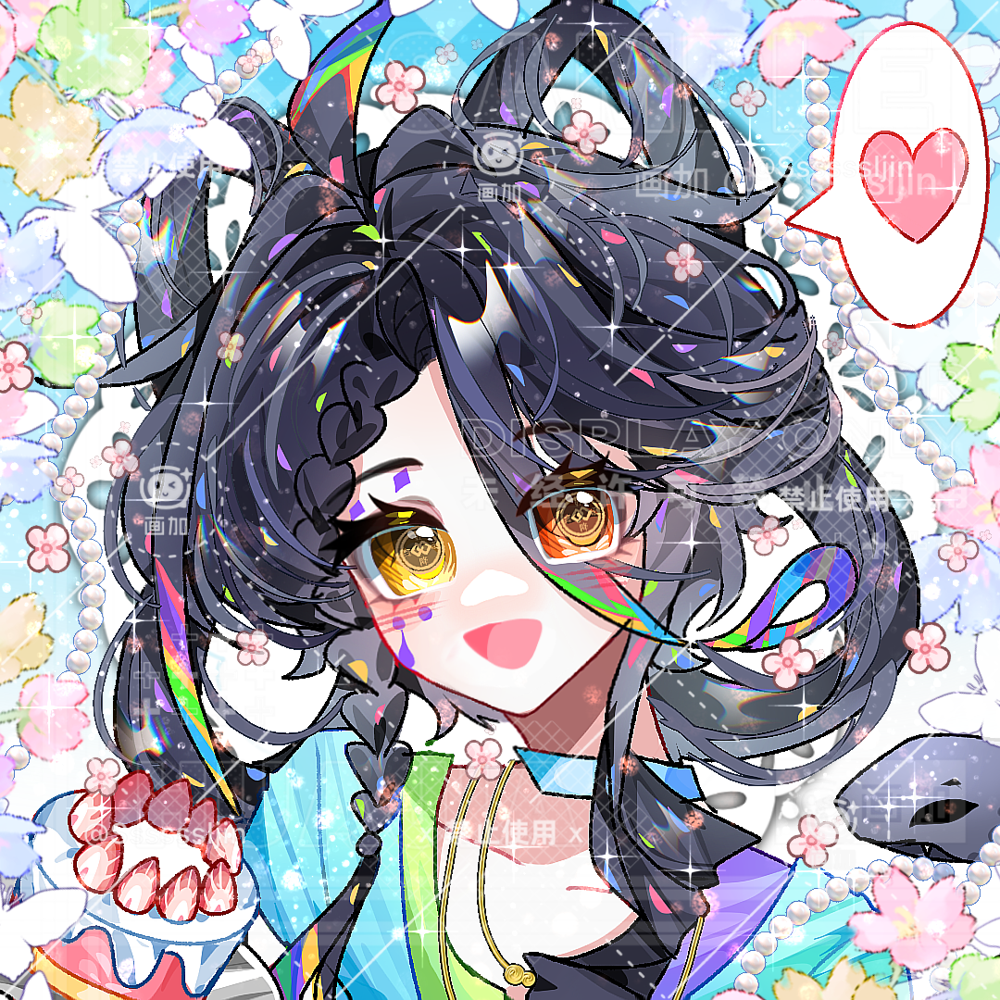

Hengxiemi
蘅纈蘼

姓名：蘅纈蘼 。
英文：Hengxiemi。
種族：人類。
性別：女。
生日：8月26日。
年齡：15歲。
居住：浮燈自治區。沒有旅行的時候會回到浮燈的家中。開始長期旅行以後，她在其他國家沒有固定住所，通常住旅店、商隊提供的臨時住處或熟人的空房。
身高：159cm。
體重：41kg。
純黑色的頭髮，最特別的是髮尾——像是不小心沾上顏料一樣混着數種鮮豔顏色，顏色之間沒有非常整齊的分界，反而顯得活潑又凌亂。
眼睛顏色明亮，瞳孔天生呈現出類似錢幣符號的特殊形狀。第一次見到她的人經常會以爲這是什麼特殊屬性留下來的痕跡。其實不是。就是天生長這樣。
小蘼對此非常遺憾。“我要是真有發財屬性，我還會天天沒錢嗎？”臉上留有一道幼年跌倒造成的疤痕。疤痕本身並不算特別嚴重，但因爲位置比較明顯，小蘼後來乾脆沿着疤的位置畫上裝飾性的花紋，把它變成了自己外貌的一部分。
別人第一次見到時經常以爲那個紋樣有什麼神祕寓意。她通常會回答：“沒有啊，好看。”她的衣服以方便活動爲主，身上經常掛着各種小袋子，其中一個專門放錢。
不過裏面到底有沒有錢，是另一回事。她很喜歡小飾品，因此身上經常出現一些從不同地方買來的小東西。有些很便宜。有些買完以後她會後悔三天。但基本不會退。
隨緣、隨性、開朗、好奇心強，非常容易和陌生人搭話。
她不是特別外向到永遠停不下來的人，但完全沒有雨宮那種面對陌生人時的距離感。
看見感興趣的東西會直接湊過去。看見喜歡的人也會主動講話。遇到計劃之外的事情時，她接受速度極快。今天原本準備去東邊，結果聽說西邊有個很好玩的市集。
“那去西邊。”別人：“你昨天不是才規劃好路線嗎？”“路線又不會生氣。”她不太喜歡把事情想得過於複雜。能解決就解決。暫時解決不了就先喫飯。今天沒錢就想辦法賺錢。
賺到錢以後再考慮明天。她表達自己的喜好也非常直接。喜歡就是喜歡。討厭就是討厭。想去就是想去。不想要就是不要。因此她和雨宮相處以後，最無法理解的一件事就是雨宮爲什麼什麼都能回答“都可以”。她本人完全做不到。
世界頂尖綜合學院中學部學生；主線主角。
喜歡錢，討厭沒錢；逛市集、看各種奇奇怪怪的小商品、買自己覺得好看的東西、數錢、研究哪裏有便宜又好喫的東西。
“賺很多很多錢，然後想買什麼就買什麼。”喜歡錢沒有任何特殊原因。不是因爲貧窮。不是因爲錯過什麼東西。不是因爲錢代表自由。她從小就是單純喜歡錢。別人小時候喜歡花、玩具、漂亮石頭。小蘼喜歡錢。
隨機應變、砍價、記價格、認路、跑腿、快速與陌生人熟悉、臨場判斷；文化課成績屬於正常範圍，實戰時反應速度明顯比筆試成績亮眼。
力量：★★★☆☆
體力：★★★★☆
智慧：★★★☆☆
魅力：★★★★☆
幸運：★★★★★
武器：書。
屬性：幻，藍。
技能：
「藍頁」
雨宮翻動書頁，將藍屬性附着在文字與紙張上。被她標記過的位置會留下只有她與頁頁能夠清楚辨認的淡藍色蝶形光點，可以用於標記道路、物品與安全路線。
「虛頁」
雨宮將自己記錄過的某個簡單景象短暫投射到現實中。例如一扇實際上不存在的門、一段錯誤延伸的道路、一盞燈或一個模糊人影。這些都只是幻象，無法真正觸碰物體。而且她必須親眼見過並認真記錄過那個景象，才能較穩定地重現。因此她的書寫得越多，能夠製造的幻象也越豐富。
「蝶跡」
大量藍色光蝶從書頁中飛出，沿着雨宮指定的方向散開。光蝶本身幾乎沒有攻擊能力，卻會在經過的位置留下短暫的藍色軌跡。雨宮可以利用這些軌跡判斷空間與路線，也能夠讓幻象沿軌跡出現。
大招「蝶夢」
雨宮將整本書完全展開。書中的文字、圖畫與紙頁邊緣逐漸化作大量藍色蝴蝶飛向周圍。範圍內的現實景象開始被她書中記錄過的場景覆蓋——街道可能突然延伸成不存在的長廊，門後出現另一片天空，遠處的人影被重複投射，方向與距離也會變得難以判斷。被困其中的人不會真正進入另一個世界。他們只是暫時看見了雨宮曾經見過的無數地方。雨宮自己則能夠通過真正的藍色蝶跡判斷現實道路。效果結束以後，所有幻象重新化作蝴蝶飛回書中，恢復成文字與圖畫。
特殊能力：雨宮與頁頁在附近時，靈契會增強她對幻象細節的控制。頁頁飛過的位置可以成爲雨宮釋放幻象的臨時起點，因此即使雨宮本人沒有站在那裏，也能讓一個小型幻象從頁頁附近展開。同時，雨宮能夠感受到頁頁強烈的情緒與大致狀態。
沒有。
小蘼在五至六歲的靈魂窗期沒有遇到與自己擁有足夠契合度、並且雙方都願意締結靈契的幼年靈獸。
靈魂窗期結束以後，她便不可能再與其他靈獸建立靈契。她對此沒有特別遺憾。
小時候知道別人擁有靈契夥伴時確實羨慕過一陣。後來發現養靈獸還要花錢。“……那算了。”不過她非常喜歡摸別人的靈獸。前提是對方允許。